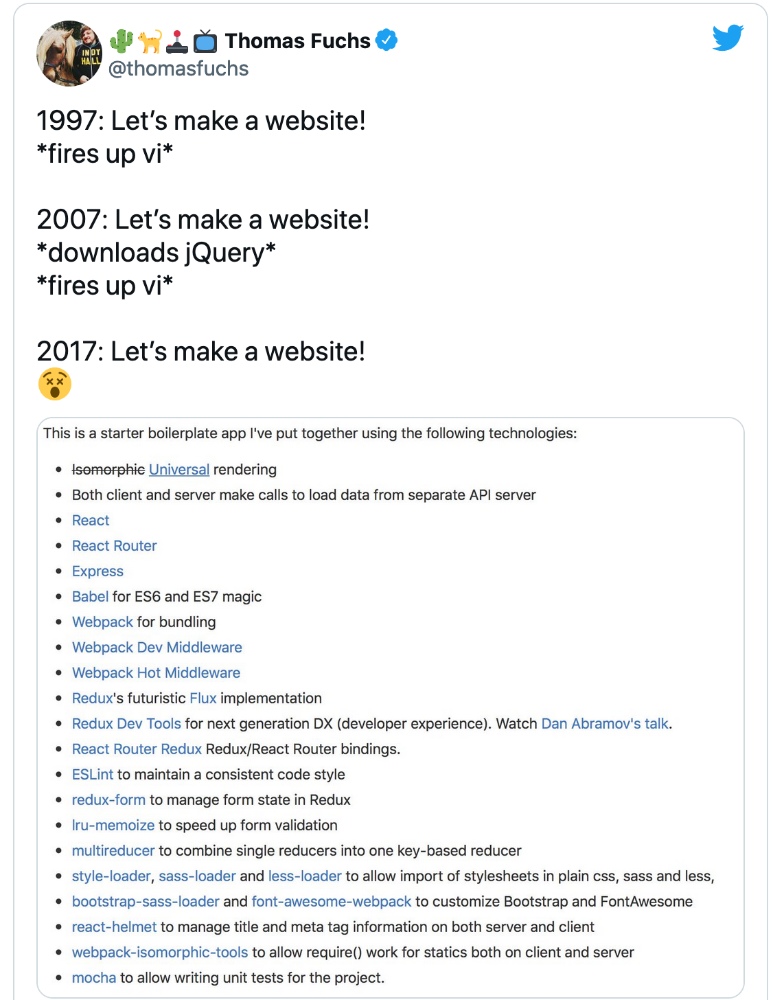

A 10x Programmer Builds a Website

Scene: The office of a IT consulting firm. The wind is blowing hard, the sun is setting, but one group of cowboy programmers is working tirelessly through the night because….. well, because that’s what the industry expects.
Programmer 10X gets a ping from his boss, using the latest and greatest chat tool, Slack, that uses 200GB of memory and crashes his PC everytime he gets a message. It does so again, so he can’t read the message. He decides to go see his boss.
“What?” says his boss. “I’m working.”
“Yeah, I didn’t see your message. Slack crashed again, and killed my PC.”
“Okay,” said the boss. “It’s my niece’s birthday next week. She is 7 years old now. My sister wants me to make a website for her. One that will wish her happy birthday. Can you do that?”
“Sure,” said 10X. “Of course we can.”
10X goes back and calls a meeting for the next day.
“We need to build a website for the boss’ niece. How do we start?”
“Well,” said the engineers, “first we need to decide on the stack.”
They spent the next 2 weeks discussing which stack to use, and decided to come up with a list.
This was just the frontend:

“Okay, now that we have front end, let’s get started.”
3 months later
Scene: The boss’ office. The boss is angry. He had ordered chicken tikka masala sandwich with extra pickles, but they gave him tikka masala sandwich with normal pickles. He’s pissed.
And then he remembers something.
“10X, 3 months ago I asked you to build a simple website for my niece. Where the hell is it?”
“Well sir, we follow test driven development. We are still writing the tests and creating mocks. We should be finished soon.”
“What?! You kiddin’, right? Get out!”
10X knows why his boss is angry. He knows they should not have used Fad.js, they should have used Even-More-Fad.js.
The front end was ready. But they still needed a backend. So 10X called another meeting.
“Right, we need to write the backend now, people. Suggestions on which framework?”
20 engineers gave him 20 suggestions. Basically, everyone chose the one they felt would help them get a better job.
After a week of arguing, they found out about a new programming language, released jointly by Google and Facebook called We Know All Your Naughty Secrets Script.
So of course they had to use it.
10X fanatsised about how he’d finally be able to work at Face-oogle after this project.
1 year after start of project
10X was sweating. The project had not been going well.
We Know All Your Naughty Secrets Script had a lot of bugs, and they had been working tirelessly to fix them. In effect doing free labour for Facebook/Google.
Which meant they hadn’t written a single line of code for their original project.
But 10X knew success was just around the corner.
That’s when his boss called him in.
“10X, you idiot, I asked you to build a website for my niece an year ago. What the hell have you been doing?”
“Well sir, it’s almost finished. Another 2 weeks. At most.”
“Forget it. In the last year, she learned a bit of HTML and Javascript. She has built the site herself.”
10X was shocked.
A HTML website? Who the hell did that?
“But sir, that’s outrageous. How did she test the site?”
“She opened it in a browser.”
“But how did she mock the backend database? How will she integrate it social media? What about caching? Load balancing? What happens if the content delivery network is down? What if she wants to turn it into a Single Page App that dynamically updates user data?”
“Get out, you idiot!”
10X went back to his desk and wrote a long rant on Reddit about how these kids just entering programming had no standards, and how they were ruining the industry.
He got a thousand upvotes. Everyone agreed standards had gone down.
Read more funny stuff: funny